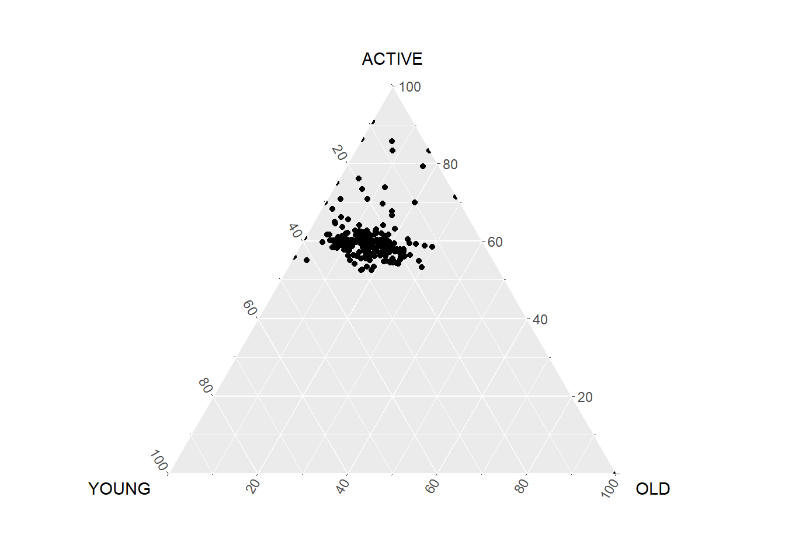
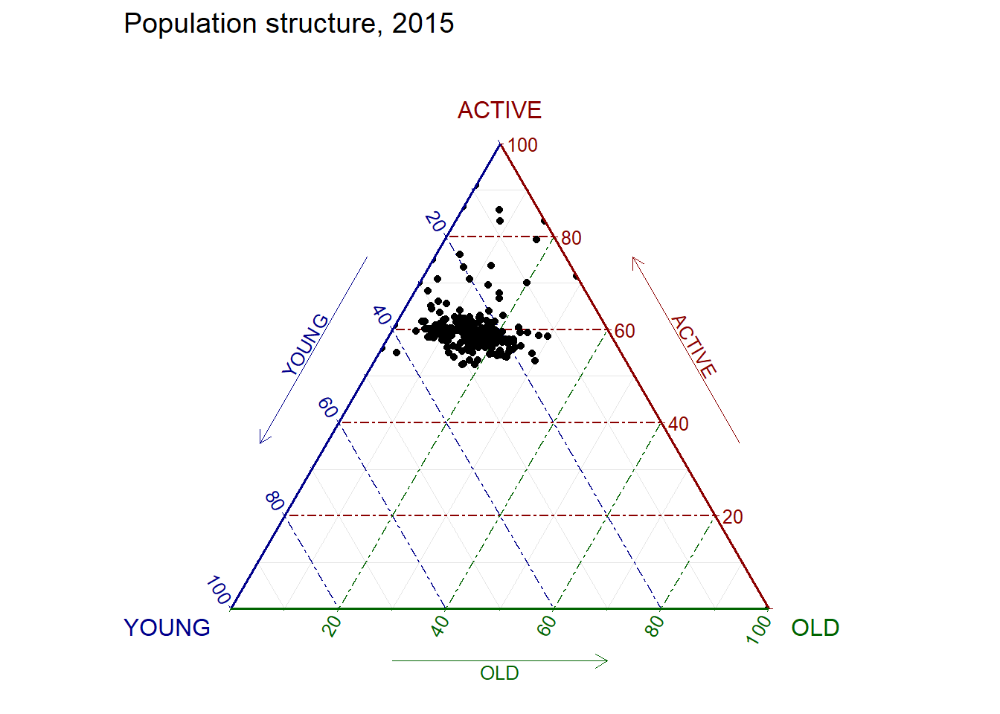
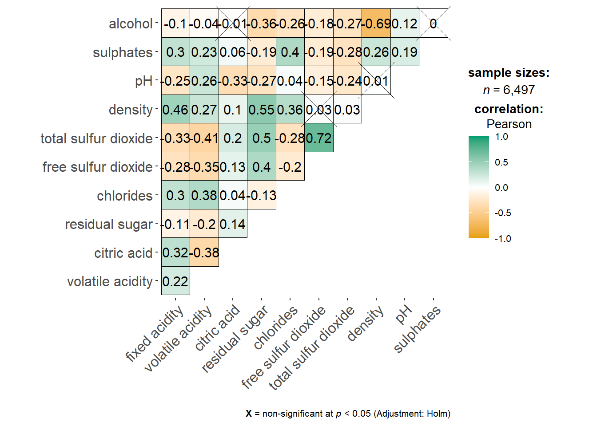
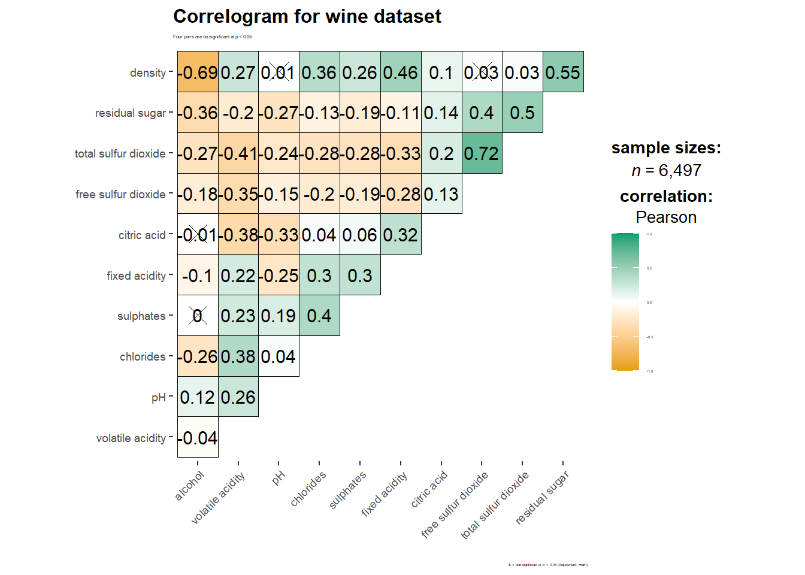
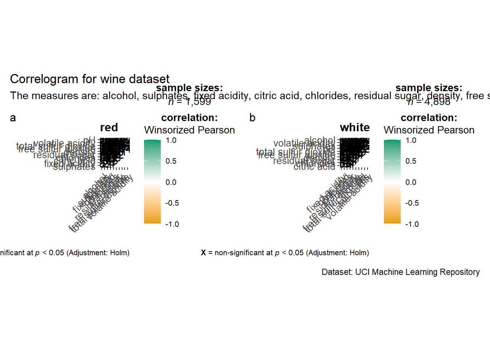

pacman::p_load(plotly, ggtern, tidyverse)Hands-on Exercise 5
Part 1: Creating Ternary Plot with R
1 Getting Started
1.1 Install and Load R Packages
2 Data Preparation
2.1 Import Data
pop_data <- read_csv("data/respopagsex2000to2018_tidy.csv") Rows: 108126 Columns: 5
── Column specification ────────────────────────────────────────────────────────
Delimiter: ","
chr (3): PA, SZ, AG
dbl (2): Year, Population
ℹ Use `spec()` to retrieve the full column specification for this data.
ℹ Specify the column types or set `show_col_types = FALSE` to quiet this message.2.2 Preparing the Data
Use mutate() to derive new measures young, economy active and old
agpop_mutated <- pop_data %>%
mutate(`Year` = as.character(Year))%>%
spread(AG, Population) %>%
mutate(YOUNG = rowSums(.[4:8]))%>%
mutate(ACTIVE = rowSums(.[9:16])) %>%
mutate(OLD = rowSums(.[17:21])) %>%
mutate(TOTAL = rowSums(.[22:24])) %>%
filter(Year == 2018)%>%
filter(TOTAL > 0)3 Plotting Ternary Diagram with R
3.1 Plotting a static ternary diagram
Use ggtern() function from ggtern package to create a simple ternary plot
ggtern(data=agpop_mutated,aes(x=YOUNG,y=ACTIVE, z=OLD)) +
geom_point()
Now let’s add colors to each category
ggtern(data=agpop_mutated, aes(x=YOUNG,y=ACTIVE, z=OLD)) +
geom_point() +
labs(title="Population structure, 2015") +
theme_rgbw()
3.2 Plotting an interactive ternary diagram
The code below create an interactive ternary plot using plot_ly() function of Plotly R
# reusable function for creating annotation object
label <- function(txt) {
list(
text = txt,
x = 0.1, y = 1,
ax = 0, ay = 0,
xref = "paper", yref = "paper",
align = "center",
font = list(family = "serif", size = 15, color = "white"),
bgcolor = "#b3b3b3", bordercolor = "black", borderwidth = 2
)
}
# reusable function for axis formatting
axis <- function(txt) {
list(
title = txt, tickformat = ".0%", tickfont = list(size = 10)
)
}
ternaryAxes <- list(
aaxis = axis("Young"),
baxis = axis("Active"),
caxis = axis("Old")
)
# Initiating a plotly visualization
plot_ly(
agpop_mutated,
a = ~YOUNG,
b = ~ACTIVE,
c = ~OLD,
color = I("black"),
type = "scatterternary"
) %>%
layout(
annotations = label("Ternary Markers"),
ternary = ternaryAxes
)No scatterternary mode specifed:
Setting the mode to markers
Read more about this attribute -> https://plotly.com/r/reference/#scatter-modeNow you can interactively hover and see the value of each point
Part 2: Visual Correlation Analysis
1 Getting Started
1.1 Install and Load R Packages
pacman::p_load(corrplot, ggstatsplot, tidyverse)1.2 Import Data
wine <- read_csv("data/wine_quality.csv")Rows: 6497 Columns: 13
── Column specification ────────────────────────────────────────────────────────
Delimiter: ","
chr (1): type
dbl (12): fixed acidity, volatile acidity, citric acid, residual sugar, chlo...
ℹ Use `spec()` to retrieve the full column specification for this data.
ℹ Specify the column types or set `show_col_types = FALSE` to quiet this message.2 Building Correlation Matrix: pairs() method
2.1 Basic Correlation Matrix
pairs(wine[,1:11])
Now let us build the scatterplot matrix for column 2 to 12
pairs(wine[,2:12])
2.2 Drawing the lower corner
Since correlation matrix is symmetric, let us only show the lower half of the matrix using the code below.
pairs(wine[,2:12], upper.panel = NULL)
Now let us show the upper half of the correlation matrix
pairs(wine[,2:12], lower.panel = NULL)
2.3 Including with Correlation Coefficients
The code will show the correlation coefficient of the variables pair instead of a scatter plot.
panel.cor <- function(x, y, digits=2, prefix="", cex.cor, ...) {
usr <- par("usr")
on.exit(par(usr))
par(usr = c(0, 1, 0, 1))
r <- abs(cor(x, y, use="complete.obs"))
txt <- format(c(r, 0.123456789), digits=digits)[1]
txt <- paste(prefix, txt, sep="")
if(missing(cex.cor)) cex.cor <- 0.8/strwidth(txt)
text(0.5, 0.5, txt, cex = cex.cor * (1 + r) / 2)
}
pairs(wine[,2:12],
upper.panel = panel.cor)Warning in par(usr): argument 1 does not name a graphical parameter
Warning in par(usr): argument 1 does not name a graphical parameter
Warning in par(usr): argument 1 does not name a graphical parameter
Warning in par(usr): argument 1 does not name a graphical parameter
Warning in par(usr): argument 1 does not name a graphical parameter
Warning in par(usr): argument 1 does not name a graphical parameter
Warning in par(usr): argument 1 does not name a graphical parameter
Warning in par(usr): argument 1 does not name a graphical parameter
Warning in par(usr): argument 1 does not name a graphical parameter
Warning in par(usr): argument 1 does not name a graphical parameter
Warning in par(usr): argument 1 does not name a graphical parameter
Warning in par(usr): argument 1 does not name a graphical parameter
Warning in par(usr): argument 1 does not name a graphical parameter
Warning in par(usr): argument 1 does not name a graphical parameter
Warning in par(usr): argument 1 does not name a graphical parameter
Warning in par(usr): argument 1 does not name a graphical parameter
Warning in par(usr): argument 1 does not name a graphical parameter
Warning in par(usr): argument 1 does not name a graphical parameter
Warning in par(usr): argument 1 does not name a graphical parameter
Warning in par(usr): argument 1 does not name a graphical parameter
Warning in par(usr): argument 1 does not name a graphical parameter
Warning in par(usr): argument 1 does not name a graphical parameter
Warning in par(usr): argument 1 does not name a graphical parameter
Warning in par(usr): argument 1 does not name a graphical parameter
Warning in par(usr): argument 1 does not name a graphical parameter
Warning in par(usr): argument 1 does not name a graphical parameter
Warning in par(usr): argument 1 does not name a graphical parameter
Warning in par(usr): argument 1 does not name a graphical parameter
Warning in par(usr): argument 1 does not name a graphical parameter
Warning in par(usr): argument 1 does not name a graphical parameter
Warning in par(usr): argument 1 does not name a graphical parameter
Warning in par(usr): argument 1 does not name a graphical parameter
Warning in par(usr): argument 1 does not name a graphical parameter
Warning in par(usr): argument 1 does not name a graphical parameter
Warning in par(usr): argument 1 does not name a graphical parameter
Warning in par(usr): argument 1 does not name a graphical parameter
Warning in par(usr): argument 1 does not name a graphical parameter
Warning in par(usr): argument 1 does not name a graphical parameter
Warning in par(usr): argument 1 does not name a graphical parameter
Warning in par(usr): argument 1 does not name a graphical parameter
Warning in par(usr): argument 1 does not name a graphical parameter
Warning in par(usr): argument 1 does not name a graphical parameter
Warning in par(usr): argument 1 does not name a graphical parameter
Warning in par(usr): argument 1 does not name a graphical parameter
Warning in par(usr): argument 1 does not name a graphical parameter
Warning in par(usr): argument 1 does not name a graphical parameter
Warning in par(usr): argument 1 does not name a graphical parameter
Warning in par(usr): argument 1 does not name a graphical parameter
Warning in par(usr): argument 1 does not name a graphical parameter
Warning in par(usr): argument 1 does not name a graphical parameter
Warning in par(usr): argument 1 does not name a graphical parameter
Warning in par(usr): argument 1 does not name a graphical parameter
Warning in par(usr): argument 1 does not name a graphical parameter
Warning in par(usr): argument 1 does not name a graphical parameter
Warning in par(usr): argument 1 does not name a graphical parameter
3 Visualising Correlation Matrix: ggcorrmat()
There are 3 R Packages that provide the functions to plot correlation matrix:
- corrgram
- ellipse
- corrplot
This section will cover ggcorrmat() from ggstatsplot package
3.1 The Basic Plot
ggstatsplot::ggcorrmat(
data = wine,
cor.vars = 1:11)
ggstatsplot::ggcorrmat(
data = wine,
cor.vars = 1:11,
ggcorrplot.args = list(outline.color = "black",
hc.order = TRUE,
tl.cex = 10),
ggplot.component = list(
theme(text=element_text(size=3),
axis.text.x = element_text(size = 7),
axis.text.y = element_text(size = 7))),
title = "Correlogram for wine dataset",
subtitle = "Four pairs are no significant at p < 0.05"
)
cor.vars is used to compute the correlation matrix needed to build the corrgram
ggcorrplot.args provides additional (aesthetics) to be passed to ggcorrplot::ggcorrplot function. The list should avoid the following arguments since they are already being used internally: corr, method, p.mat, sig.level, ggtheme, colors, lab, pch, legend.title, digits.
4 Building Multiple Plots
ggstatsplot supports faceting, but the feature is not available in ggcorrmat(), but in the grouped_ggcorrmat() function of ggstatsplot
grouped_ggcorrmat(
data = wine,
cor.vars = 1:11,
grouping.var = type,
type = "robust",
p.adjust.method = "holm",
plotgrid.args = list(ncol = 2),
ggcorrplot.args = list(outline.color = "black",
hc.order = TRUE,
tl.cex = 10),
annotation.args = list(
tag_levels = "a",
title = "Correlogram for wine dataset",
subtitle = "The measures are: alcohol, sulphates, fixed acidity, citric acid, chlorides, residual sugar, density, free sulfur dioxide and volatile acidity",
caption = "Dataset: UCI Machine Learning Repository"
)
)
5 Visualising Correlation Matrix using corrplot Package
5.1 Getting Started with corrplot
wine.cor <- cor(wine[, 1:11])Use corrplot() to plot the corrgram
corrplot(wine.cor)
5.2 Working with Visual Geometrics
In corrplot package, there are seven visual geometrics (parameter method) can be used to encode the attribute values. They are: circle, square, ellipse, number, shade, color and pie.
corrplot(wine.cor,
method = "ellipse") 
5.3 Working with Layout
corrplot() supports 3 layout types: full, upper or lower
corrplot(wine.cor,
method = "ellipse",
type="lower")
corrplot(wine.cor, method = "ellipse", type="lower", diag = FALSE, tl.col = "black")
5.4 Working with Mixed Layout
corrplot.mixed(wine.cor,
lower = "ellipse",
upper = "number",
tl.pos = "lt",
diag = "l",
tl.col = "black")
5.5 Combining corrgram with the Significant Test
Using the corrplot package, we can use cor.mtest() to compute p-values and confidence interval of each pair of variables.
wine.sig = cor.mtest(wine.cor, conf.level= .95)corrplot(wine.cor,
method = "number",
type = "lower",
diag = FALSE,
tl.col = "black",
tl.srt = 45,
p.mat = wine.sig$p, # use the p-value computation here
sig.level = .05)
5.6 Reorder a corrgram
Matrix reordering is important for mining the hidden structure and pattern in a corrgram. There are 4 supported sorting methods:
- AOE is for the angular order
- FPC is for first principal component order
- hclust is for hierarchical clustering order, hclust.method for the agglomeration method to be used:
- hclust.method should be one of ward, single, complete, average, mcquitty, median, or centroid
- alphabet for alphabetical order
corrplot.mixed(wine.cor,
lower = "ellipse",
upper = "number",
tl.pos = "lt",
diag = "l",
order="AOE",
tl.col = "black")
5.7 Reordering a correlation matrix using hclust
corrplot(wine.cor,
method = "ellipse",
tl.pos = "lt",
tl.col = "black",
order="hclust",
hclust.method = "ward.D",
addrect = 3)
Part 3: Heatmap for Visualising and Analysing Multivariate Data
1 Getting Started
1.1 Install and Load Packages
pacman::p_load(seriation, dendextend, heatmaply, tidyverse)1.2 Import Data
wh <- read_csv("data/WHData-2018.csv")Rows: 156 Columns: 12
── Column specification ────────────────────────────────────────────────────────
Delimiter: ","
chr (2): Country, Region
dbl (10): Happiness score, Whisker-high, Whisker-low, Dystopia, GDP per capi...
ℹ Use `spec()` to retrieve the full column specification for this data.
ℹ Specify the column types or set `show_col_types = FALSE` to quiet this message.1.3 Data Preparation
Change the rows by country name instead of row number
row.names(wh) <- wh$CountryWarning: Setting row names on a tibble is deprecated.1.4 Transforming the dataframe into a matrix
wh1 <- dplyr::select(wh, c(3, 7:12))
wh_matrix <- data.matrix(wh)